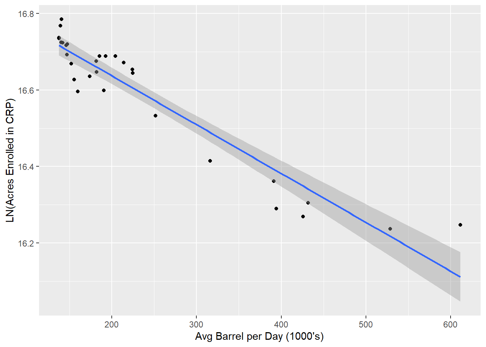
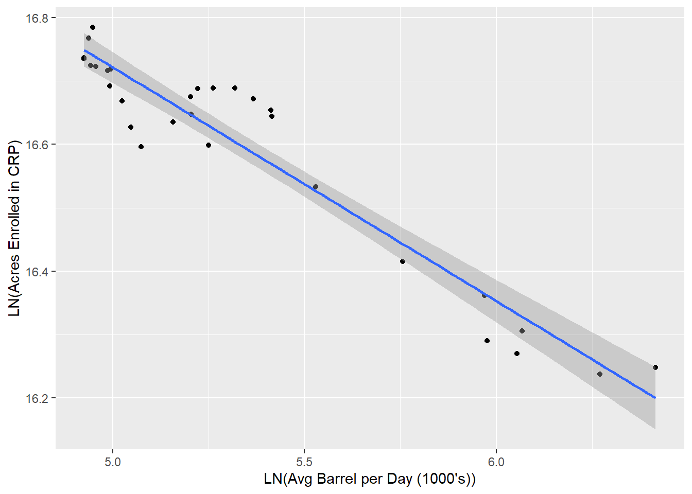
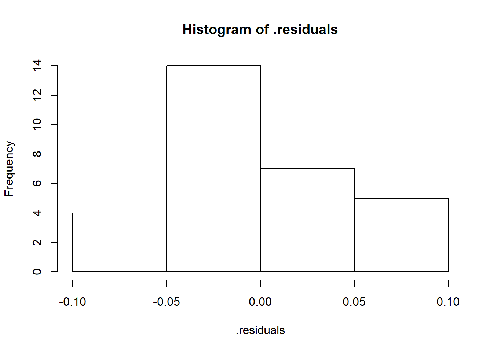

Oil Production and Land Conservation in the US
Andrew Leonard
2021-07-27
Overview
This document will provide a comparison of the US EIA’s Oil Production data and the USDA’s CRP Enrollment data using R Markdown, Tabeau Public, and Linear Regression models. Please refer to the other pages in this site in order to learn how to extract, clean, and save this data locally.
I began my career working in the ag commodities market in 2015. At the time, the price of oil was plunging due to the increase in US shale oil production - obviously this had an impact on the price of agricultural commodities as well.
The practice used in shale oil production is known as hydraulic fracturing AKA “fracking” which has been around since the late 1980’s. Fracking can be a controversial subject because of its effects on the environment so I was curious what other facets of agriculture could be affected by shale oil production.
CRP Data
Let’s begin the analysis by loading the necessary packages in R.
library("data.table")
library("htmltools")
library("ggplot2")
suppressMessages(library("here"))Load the CRP data saved in the CSV file and view it.
crp_fname <- here("Data", "usda_crp_enrollment.csv")
crp_dt <- fread(crp_fname)
head(crp_dt)## state year acres
## 1: ALABAMA 1986 68508.7
## 2: ALASKA 1986 2312.0
## 3: ARIZONA 1986 0.0
## 4: ARKANSAS 1986 19999.2
## 5: CALIFORNIA 1986 21953.4
## 6: COLORADO 1986 354707.6Let’s rank states by the quantity of acres enrolled for the most recent date.
# Start by creating a column for the max year by state.
crp_dt[, max_year := max(year), by = state]
# Then filter where year is equal to max year.
max_crp_dt <- crp_dt[year == max_year]
# now order the data by acres (descending)
setorder(max_crp_dt, -acres)
# create a number for each row
max_crp_dt[, rank := .I]
# check top 10 rows
head(max_crp_dt, 10)## state year acres max_year rank
## 1: TEXAS 2019 2811584 2019 1
## 2: KANSAS 2019 1940899 2019 2
## 3: COLORADO 2019 1838914 2019 3
## 4: IOWA 2019 1745860 2019 4
## 5: NORTH DAKOTA 2019 1295115 2019 5
## 6: WASHINGTON 2019 1191687 2019 6
## 7: SOUTH DAKOTA 2019 1142968 2019 7
## 8: NEBRASKA 2019 1064143 2019 8
## 9: MONTANA 2019 1059941 2019 9
## 10: MINNESOTA 2019 1058581 2019 10I created a dashboard in Tableau Public which you can interact with below:
read_html("crp_all_states.html")
Oil Data
Now let’s load our oil production data and view it.
oil_fname <- here("Data", "eia_oil_production.csv")
oil_dt <- fread(oil_fname)
head(oil_dt)## state_abb state year date barrel barrels_per_day
## 1: AK ALASKA 1981 1981-01-01 49789 1606.097
## 2: AK ALASKA 1981 1981-02-01 45346 1619.500
## 3: AK ALASKA 1981 1981-03-01 50150 1617.742
## 4: AK ALASKA 1981 1981-04-01 48235 1607.833
## 5: AK ALASKA 1981 1981-05-01 48977 1579.903
## 6: AK ALASKA 1981 1981-06-01 48967 1632.233The oil data is aggregated by month by default so we need to aggregate it by year in order to join the data with our CRP data later.
oil_dt <- oil_dt[, .(sum_barrel = sum(barrel), avg_barrels_per_day = mean(barrels_per_day)), by = .(state_abb, state, year)]
head(oil_dt)## state_abb state year sum_barrel avg_barrels_per_day
## 1: AK ALASKA 1981 587337 1609.293
## 2: AK ALASKA 1982 618910 1695.609
## 3: AK ALASKA 1983 625527 1713.826
## 4: AK ALASKA 1984 630401 1722.765
## 5: AK ALASKA 1985 666233 1825.780
## 6: AK ALASKA 1986 681310 1866.718I created another dashboard in Tableau Public except using oil data which you can interact with below.
read_html("oil_all_states.html")
The states we’re primarily interested in are TX, ND, SD, CO, MT, NE, NM, WY, PA, WV, OH, NY, LA, OK, and AR. 

Compare
Let’s rank states by the quantity of oil produced for the most recent year that is present in both sets of data.
max_year <- min(max(oil_dt$year), max(crp_dt$year))
max_oil_dt <- oil_dt[year == max_year]
setorder(max_oil_dt, -sum_barrel)
max_oil_dt[, rank := .I]
head(max_oil_dt, 10)## state_abb state year sum_barrel avg_barrels_per_day rank
## 1: TX TEXAS 2019 1861762 5099.4829 1
## 2: ND NORTH DAKOTA 2019 517682 1417.6003 2
## 3: NM NEW MEXICO 2019 331985 909.1404 3
## 4: OK OKLAHOMA 2019 215582 590.4835 4
## 5: CO COLORADO 2019 192383 526.9238 5
## 6: AK ALASKA 2019 169946 465.7864 6
## 7: CA CALIFORNIA 2019 156350 428.5063 7
## 8: WY WYOMING 2019 102171 279.8368 8
## 9: LA LOUISIANA 2019 45897 125.7719 9
## 10: UT UTAH 2019 36933 101.1966 10Let’s compare that to the ranking for CRP.
head(max_crp_dt, 10)## state year acres max_year rank
## 1: TEXAS 2019 2811584 2019 1
## 2: KANSAS 2019 1940899 2019 2
## 3: COLORADO 2019 1838914 2019 3
## 4: IOWA 2019 1745860 2019 4
## 5: NORTH DAKOTA 2019 1295115 2019 5
## 6: WASHINGTON 2019 1191687 2019 6
## 7: SOUTH DAKOTA 2019 1142968 2019 7
## 8: NEBRASKA 2019 1064143 2019 8
## 9: MONTANA 2019 1059941 2019 9
## 10: MINNESOTA 2019 1058581 2019 10Let’s go ahead and filter our oil data for only these states.
fracking_states <- c("TX", "ND", "SD", "CO", "MT", "NE", "NM", "WY", "PA", "WV", "OH", "NY", "LA", "OK", "AR")
oil_dt <- oil_dt[state_abb %in% fracking_states]I created another dashboard in Tableau Public for CRP data in fracking states only which you can interact with below:
read_html("crp_fracking_states.html")
And I did the same thing using oil data in Tableau Public.
read_html("oil_fracking_states.html")
Linear Regression Model
Now join the CRP and Oil Production data and compare the two variables using linear regression.
# Note - inner join filters both tables
DT <- merge(oil_dt, crp_dt, by = c("state", "year"))
DT <- DT[, .(avg_barrels_per_day = mean(avg_barrels_per_day),
acres = sum(acres)),
by = year]
ggplot(DT, aes(x = avg_barrels_per_day, y = acres)) +
geom_point() +
stat_summary(fun.data = mean_cl_normal) +
geom_smooth(method = "lm", formula = y~x)## Warning: Removed 34 rows containing missing values (geom_segment).
We can see there are a couple of outliers. Since fracking didn’t start until the 1980’s, let’s filter out dates before 1990 and plot the linear model again.
DT <- DT[year >= 1990]
ggplot(DT, aes(x = avg_barrels_per_day, y = acres)) +
geom_point() +
stat_summary(fun.data = mean_cl_normal) +
geom_smooth(method = "lm", formula = y~x) +
labs(y = "Acres Enrolled in CRP", x = "Avg Barrel per Day (1000's)")## Warning: Removed 30 rows containing missing values (geom_segment).
Much better! Now we can see there is a distinct linear trend between the number of acres enrolled in the Conservation Reserve Program and the average quantity (1,000’s barrels) of oil produced within the same states.
More precisely, 87.81% of the variance in the acres enrolled in CRP can be explained by the variance in the average number of barrels of crude produced in these same states according to our model.
mod <- lm(acres ~ avg_barrels_per_day, DT)
summary(mod)##
## Call:
## lm(formula = acres ~ avg_barrels_per_day, data = DT)
##
## Residuals:
## Min 1Q Median 3Q Max
## -1554421 -640077 268381 475988 2142412
##
## Coefficients:
## Estimate Std. Error t value Pr(>|t|)
## (Intercept) 20670853 351148 58.87 < 2e-16 ***
## avg_barrels_per_day -18681 1315 -14.21 2.53e-14 ***
## ---
## Signif. codes: 0 '***' 0.001 '**' 0.01 '*' 0.05 '.' 0.1 ' ' 1
##
## Residual standard error: 904900 on 28 degrees of freedom
## Multiple R-squared: 0.8781, Adjusted R-squared: 0.8738
## F-statistic: 201.8 on 1 and 28 DF, p-value: 2.526e-14Log-Linear Regression Model
But can we do better? Note that the values for our dependent variable (Acres Enrolled in CRP) are much larger than the values for our independent variable (Avg Barrel per Day in 1000’s). Let’s try taking the natural log of our dependent variable to improve the scale and plot the new values in a log-linear model.
DT[, ln_acres := log(acres)]
ggplot(DT, aes(x = avg_barrels_per_day, y = ln_acres)) +
geom_point() +
geom_smooth(method = "lm", formula = y ~ x) +
labs(y = "LN(Acres Enrolled in CRP)", x = "Avg Barrel per Day (1000's)")
Now let’s check the log-linear model.
mod <- lm(ln_acres ~ avg_barrels_per_day, DT)
summary(mod)##
## Call:
## lm(formula = ln_acres ~ avg_barrels_per_day, data = DT)
##
## Residuals:
## Min 1Q Median 3Q Max
## -0.09945 -0.03593 0.01164 0.03722 0.13649
##
## Coefficients:
## Estimate Std. Error t value Pr(>|t|)
## (Intercept) 1.689e+01 2.135e-02 791.17 < 2e-16 ***
## avg_barrels_per_day -1.276e-03 7.996e-05 -15.96 1.37e-15 ***
## ---
## Signif. codes: 0 '***' 0.001 '**' 0.01 '*' 0.05 '.' 0.1 ' ' 1
##
## Residual standard error: 0.05502 on 28 degrees of freedom
## Multiple R-squared: 0.901, Adjusted R-squared: 0.8974
## F-statistic: 254.8 on 1 and 28 DF, p-value: 1.368e-15Not bad. We can see the log-linear model is a little better than the linear model. According to our log-linear model, 90.1% of the variance in the natural log of acres enrolled in CRP can be explained by the variance in the average number of barrels of crude produced in these same states.
Log-Log Regression Model
But what if we take the natural log of our independent variable as well and compare the values using a log-log model?
DT[, ln_avg_barrels_per_day := log(avg_barrels_per_day)]
ggplot(DT, aes(x = ln_avg_barrels_per_day, y = ln_acres)) +
geom_point() +
geom_smooth(method = "lm", formula = y ~ x) +
labs(y = "LN(Acres Enrolled in CRP)", x = "LN(Avg Barrel per Day (1000's))")
And let’s create the log-log model.
mod <- lm(ln_acres ~ ln_avg_barrels_per_day, DT)
summary(mod)##
## Call:
## lm(formula = ln_acres ~ ln_avg_barrels_per_day, data = DT)
##
## Residuals:
## Min 1Q Median 3Q Max
## -0.09811 -0.02812 -0.01148 0.03973 0.08503
##
## Coefficients:
## Estimate Std. Error t value Pr(>|t|)
## (Intercept) 18.56566 0.11294 164.38 <2e-16 ***
## ln_avg_barrels_per_day -0.36881 0.02103 -17.54 <2e-16 ***
## ---
## Signif. codes: 0 '***' 0.001 '**' 0.01 '*' 0.05 '.' 0.1 ' ' 1
##
## Residual standard error: 0.0505 on 28 degrees of freedom
## Multiple R-squared: 0.9166, Adjusted R-squared: 0.9136
## F-statistic: 307.6 on 1 and 28 DF, p-value: < 2.2e-16Now let’s check the residuals - they should be approximately normally distributed.
.residuals <- mod$residuals
hist(.residuals)
Hey-oh now we’re coookin!
Results
According to our log-log model 91.66% of the variance in the natural log of acres enrolled in CRP can be explained by the variance in the natural log of average number of barrels of crude produced in these same states.
Furthermore, since this is a log-log model we know that the slope coefficient is the elasticity.
Therefore, according to our log-log model, a 1% increase in the Avg Barrel Produced per Day in 1000’s will result in an approximate 0.3688% decrease in the Acres Enrolled in CRP for states where hydraulic fracturing is utilized for oil production.